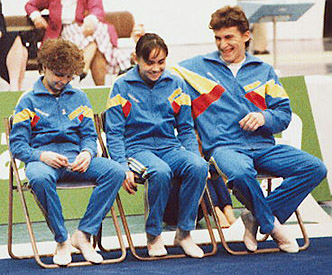

Marius Gherman (ROM)
1988 Olympic HB Bronze Medalist

Gherman (right) shares a laugh
with his teammates
at the 1988 Chunichi Cup.
Medal Total
Olympic Games: 1
Bronze
World Championships: 1 Silver
European Championships: 1 Bronze
Marius was born on July 14, 1967, in Sibiu. He trained at Dynamo Bucuresti.
Competition Results
1983
Jr. Friendship Tournament (Druzhba): 5th Team, 6th HB
1984
Balkan Championships: 2nd AA, 1st FX, 2nd PB, 2nd HB, 3rd V
Blume Memorial: 13th AA
Jr. European Championships: 20th AA
ROM Cup: 1st AA, 1st FX, 1st PB, 1st HB
1985
Balkan Championships: 2nd AA, 1st V, 2nd FX, 3rd PB, 3rd HB
Cottbus International: 10th AA, 1st V, 8th PH
DTB Cup: 8th AA, 4th V, 4th HB
Intl. Junior Championships: 6th AA, 1st HB, 4th PB, 6th R, 6th V, 7th FX,
8th PH
Jr. Friendship Tournament (Druzhba): 10th AA, 1st V, 2nd HB, 6th FX
1986
Balkan Championships: 1st AA, 1st HB, 2nd FX, 2nd R, 2nd V, 3rd PB
Belgian Gym Masters: 6th AA, 1st HB, 3rd FX, 3rd V, 4th PB
Goodwill Games: 5th PB, 6th V, 6th HB
Intl. Championships of Romania: 3rd AA, 1st PB, 2nd FX, 3rd V
1987
Cottbus International: 4th AA
ESP-ROM Dual Meet: 1st Team, 1st AA
European Championships: 7th AA, 4th HB, 7th V
Intl. Championships of Romania: 1st AA
World Championships: 7th Team, 19th AA
1988
Arena Cup: 14th AA
Chunichi Cup: 7th AA, 2nd FX, 4th PB, 4th V
DTB Cup: 7th AA, 1st HB, 4th FX, 5th PH
Intl. Championships of Romania: 1st AA, 1st V, 1st PB, 2nd FX, 2nd PH
Olympic Games: 7th Team, 5th AA, 3rd HB, 5th PB
Tokyo Cup: 1st HB, 3rd PB, 7th V
1989
Chunichi Cup: 11th AA
European Championships: 10th AA, 3rd V, 4th FX
French International: 12th AA, 2nd FX, 4th V
Intl. Championships of Romania: 1st AA
Tokyo Cup: 4th PB, 7th PH
World Championships: 6th Team, 8th AA, 4th FX
1990
Blume Memorial: 5th AA
DTB Cup: 4th AA, 2nd V
Dutch Open: 3rd AA
European Championships: 9th AA, 4th FX, 5th V
French International: 11th AA, 1st FX, 5th V
Intl. Championships of Romania: 1st AA, 1st PH
ITA-ROM-GER: 2nd AA
Rome Grand Prix: 4th AA
World Cup: 8th AA, 7th V
1991
Dutch Open: 9th AA
Gander Memorial: 6th AA
ITA-ROM-URS: 10th AA
Rome Grand Prix: 7th AA
Swiss Cup: 3rd Team
Torino Grand Prix: 1st FX
World Championships: 8th Team, 23rd AA
1992
Chunichi Cup: 13th AA, 8th FX
Cottbus International: 2nd AA, 3rd PH, 4th FX, 4th V, 4th PB, 6th HB
GER-SUI-ROM: 3rd AA
Intl. Championships of Romania: 1st AA, 1st FX, 1st V, 1st HB
Olympic Games: 7th Team, 7th AA
SUI-ROM-BUL: 2nd AA
Tokyo Cup: 3rd V, 4th FX
World Championships: 5th FX, 5th V, 10th HB (semis), 12th PB (semis), 13th
PH (semis)
1993
American Cup: 5th AA
DTB Cup: 3rd PB, 4th V, 5th FX
Intl. Mixed Pairs: 10th Team
ITA-ROM-RUS: 16th AA
Nikon International: 20th AA, 1st PH, 3rd V
ROM Championships: 5th AA, 3rd PB
World Championships: 13th AA, 2nd HB, 5th FX
1994
Cottbus International: 5th FX, 8th HB, 10th V
Intl. Championships of Romania: 3rd AA, 1st PH, 1st V, 2nd FX
ITA-ROM-RUS: 10th AA
ROM Championships: 3rd AA, 1st FX, 1st HB, 2nd V, 3rd PB
World Championships (Brisbane): 44th AA
World Championships (Dortmund): 10th Team (prelims)
This page was created on September
10, 2005 and was last updated on January 16, 2011.
© Gymn Forum